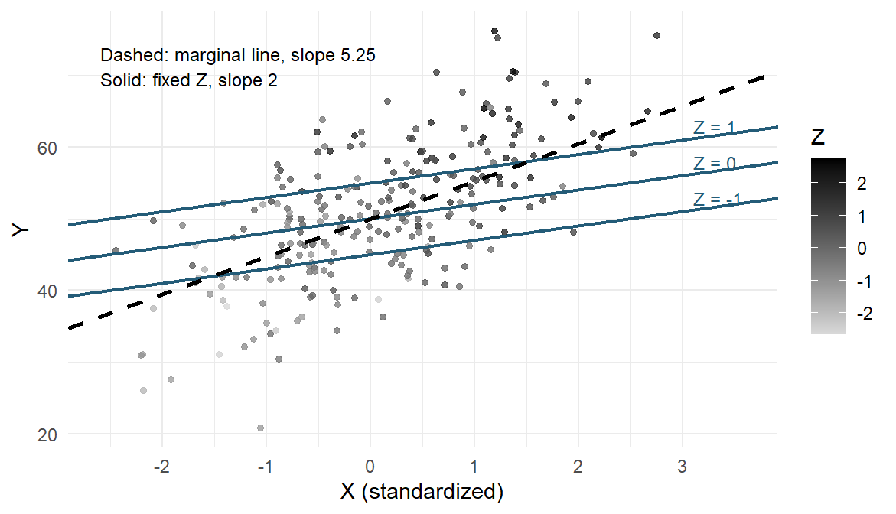
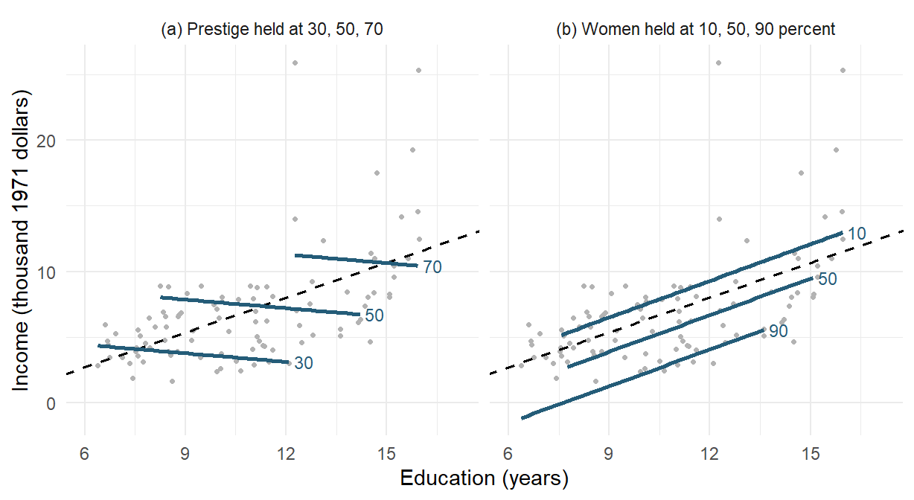
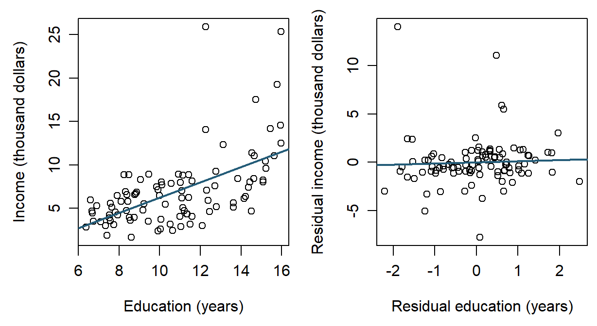
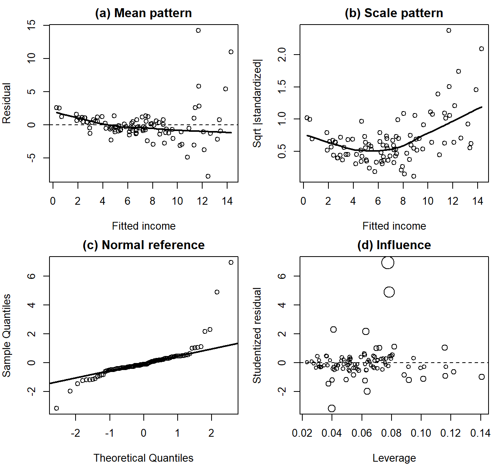
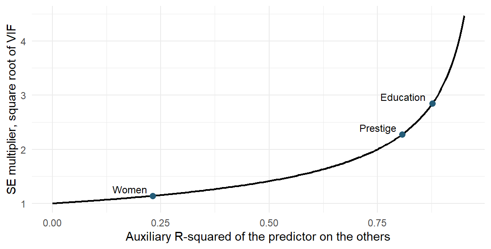
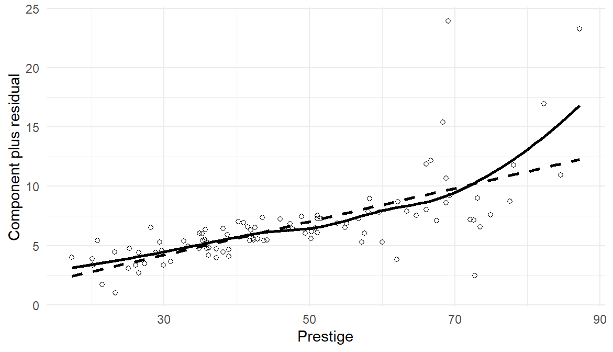
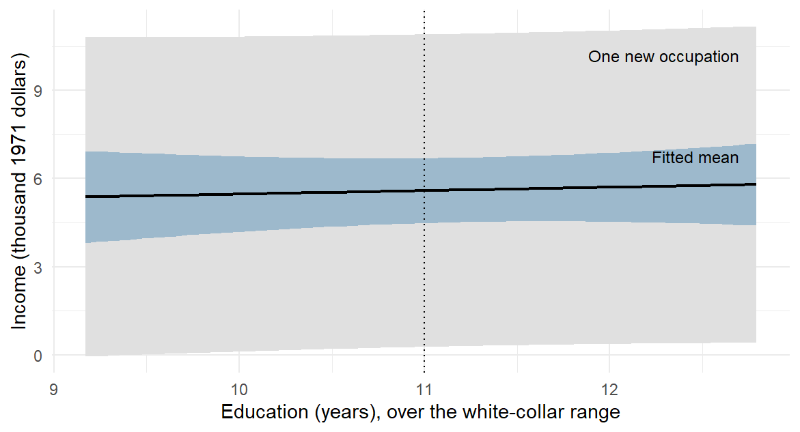
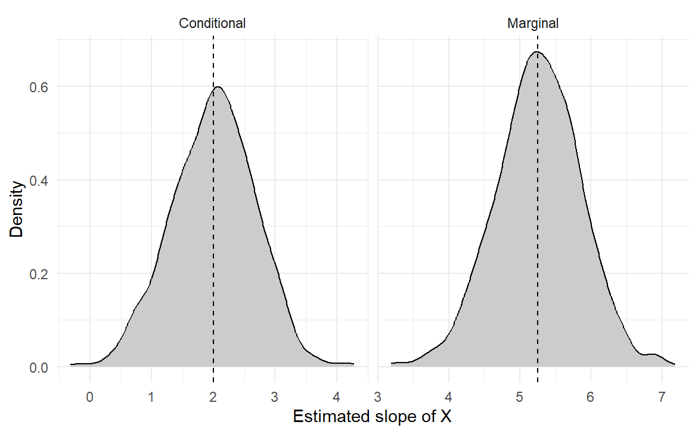

Multiple Regression I: Conditioning, Checks, and Coordinated Questions
NoteChapter overview
One set of records can owe several answers, and multiple regression is the model behind most of them. This chapter first writes the multiple regression model, says what a partial slope compares, and draws a simulated process with two predictors. It then fits the model to the 98 occupations of Chapter 7 that have a recorded type, attaches uncertainty to the education slope and checks the model, computes a fitted profile and an average over named profiles, and compares two prediction rules on held-out occupations. It closes with a short report that owes three answers, a marginal description, a conditional association and a prediction comparison, and reads and evaluates them. By the end you will be able to write, fit and read an additive multiple regression in R, keep changes of records, comparison, coefficient coordinates and uncertainty calculation apart, judge a held-out comparison, and evaluate coordinated answers without merging them.
A report on occupational income may ask whether education and income move together, whether that relationship remains when other characteristics of the occupations are held constant, and whether those characteristics help predict income. The questions inform one another, but answering one does not answer the other two.
We use a retrospective teaching study written for this chapter. Its records are the Prestige data distributed with the carData package (Fox et al., 2022; Fox & Weisberg, 2019), whose documentation describes the data; the analyses and the short report are ours.
A simple regression models an outcome with one predictor, \(Y_i=\beta_0+\beta_1x_i+\varepsilon_i\). Multiple regression keeps that form and adds one term for each further predictor.
Model Formulation and Interpretation
The population and observation forms
With several predictors, the model for an outcome is
\[ Y=\beta_0+\beta_1x_1+\cdots+\beta_{p-1}x_{p-1}+\varepsilon, \]
\[ E(\varepsilon\mid x_1,\ldots,x_{p-1})=0,\qquad \operatorname{Var}(\varepsilon\mid x_1,\ldots,x_{p-1})=\sigma^2; \]
\[ Y_i=\beta_0+\beta_1x_{i1}+\cdots+\beta_{p-1}x_{i,p-1}+\varepsilon_i, \qquad i=1,\ldots,n. \]
The part \(\beta_0+\beta_1x_1+\cdots+\beta_{p-1}x_{p-1}\) is the mean of \(Y\) among units that share those predictor values, and the error \(\varepsilon\) collects everything else. The model has \(p\) coefficients, counting the intercept. \(\beta_0\), the intercept, is the mean when every predictor is zero; it anchors the equation and describes real units only if that combination is plausible within the data. \(\beta_j\), a partial slope, is the difference in the mean of \(Y\) for a one-unit difference in \(x_j\), holding the other predictors fixed. \(\sigma\) is the typical spread of outcomes around the mean at fixed predictor values. The conditions apply at every combination of predictor values: the errors average zero and share one variance \(\sigma^2\); they are independent of one another, which comes from how the data arose; and for the exact \(t\) reference they are Normal. The intervals used here require independent errors, the classical SE also needs the common variance, and the exact \(t\) also needs Normal errors; the HC3 covariance of Section 3.3 relaxes the common variance under its own large-sample conditions.
Under the Normal-error model, \(Y_i\) at its fixed predictor values is Normal with mean \(\beta_0+\sum_{j=1}^{p-1}\beta_jx_{ij}\) and SD \(\sigma\). Estimating \(p\) coefficients leaves \(n-p\) residual degrees of freedom. A factor with \(J\) categories contributes \(J-1\) indicator columns, as Section 2.3 explains using the occupation records.
What a partial slope compares
Take two predictors, \(x\) and \(z\). The model mean is \(\mu(x,z)=\beta_0+\beta_Xx+\beta_Zz\). Comparing two means a unit apart in \(x\) at the same \(z\) gives
\[ \mu(x+1,z)-\mu(x,z)=\beta_X(x+1)-\beta_Xx=\beta_X. \]
All the shared terms cancel. Holding constant names this comparison of model means; it does not mean that \(x\) was changed experimentally, that two observed units match on everything else, or that unmeasured differences have been controlled. A partial slope’s meaning belongs to its named conditioning set. The same predictor can have a different coefficient when a different set is held fixed. The additive form also makes its comparison the same at every value of the other predictors; Chapter 10 asks when that comparison itself varies.
Partial correlation holds variables fixed another way, by residualizing: it removes their fitted linear parts from two variables before correlating what remains. A fitted equation with several predictors holds the others fixed directly, because two of its fitted means that differ in one predictor share every other term; Section 3.1 shows that the two routes give the same slope. Chapter 9, Section 2, applies the same idea to adjusted group means in the analysis of covariance.
Simulating and graphing a two-predictor model
A known process makes the comparison concrete. Suppose
\[ Y=50+2X+5Z+\varepsilon, \qquad E(\varepsilon\mid X,Z)=0, \]
with finite variances and \(\operatorname{Cov}(X,Z)/\operatorname{Var}(X)=0.65\). The conditional \(X\) coefficient is 2, and the marginal linear slope is
\[ \frac{\operatorname{Cov}(X,Y)}{\operatorname{Var}(X)} =2+5\frac{\operatorname{Cov}(X,Z)}{\operatorname{Var}(X)} =2+5(0.65)=5.25. \]
Generate independent standard Normal values \(X\) and \(U\), let \(Z=.65X+\sqrt{1-.65^2}U\), and add independent Normal errors with SD 6. Both predictors then have variance one and correlation .65. Figure 1 draws one generated sample of 250 cases from this process, with the process’s own mean lines rather than fitted ones. Each solid line holds \(Z\) at one value and rises 2 for each unit of \(X\). The dashed marginal line rises 5.25, because higher \(X\) comes with higher \(Z\) (the darker points sit toward the upper right) and the marginal line carries that association along.
With these generated columns named x, z and y in sim, the following calls estimate the marginal and conditional equations. The short examples throughout this chapter show the statistical operation on the data just described.
coef(lm(y ~ x, data = sim))
coef(lm(y ~ x + z, data = sim))In this sample the fitted \(X\) coefficient is 3.0259 (SE 0.5325), the \(Z\) coefficient 4.3991 (SE 0.5282), and the marginal slope 5.9971 (SE 0.4466). Each lies within two SEs of its programmed value, 2, 5, and 5.25 respectively. A single sample estimates the process rather than reproducing its parameters exactly.
Mapping x and y to position and z to colour draws the points in Figure 1. The fitted slopes and the known process lines answer related but distinct questions.
library(ggplot2)
ggplot(sim, aes(x, y, colour = z)) + geom_point()The two slopes answer different questions: one holds \(Z\) fixed, the other includes how \(Z\) moves with \(X\), and neither alone says what would happen if someone intervened on \(X\). Calling 5.25 “biased” requires naming the target it is used for; as the marginal linear slope it is correct. Appendix A gives the derivation and the repeated samples.
Estimating the Model on the Occupation Records
The records and the working model
A row is an occupation, not a worker. Income is the occupation’s average annual income in 1971 Canadian dollars, divided here by 1,000; education is average years of education; women is the percentage of women; prestige is a rating from a mid-1960s survey, earlier than the 1971 income and education; and type is blue-collar (bc), professional/managerial/technical (prof), or white-collar (wc). These historical occupational averages are not current individual earnings.
Chapter 7 used all 102 occupations. The full variable set leaves 98 complete records, because athletes, newsboys, babysitters, and farmers have no recorded type; the three types keep 44, 31, and 23 records. We keep the source row order, which also makes the validation split of Section 6 reproducible. The original 102 records are d0; dat holds the 98 complete records, with income_k in thousand dollars and type levels ordered bc, prof, wc.
c(original = nrow(d0), retained = nrow(dat))
table(dat$type)We refit the education-only model on these same 98 records before any adjusted comparison, so that the move from 102 to 98, a change in which records are described, is never presented as an adjustment effect. Complete records make the computations comparable; they do not make the omitted occupations irrelevant or the 98 a probability sample of Canadian occupations.
The working occupation model is
\[ \mathrm{income}_k=\beta_0+\beta_Ee+\beta_Pp+\beta_Ww +\delta_{\mathrm{prof}}D_{\mathrm{prof}}+\delta_{\mathrm{wc}}D_{\mathrm{wc}} +\varepsilon, \]
where \(e\) is education, \(p\) prestige, \(w\) percentage of women, and each indicator \(D\) is 1 for its named type. Blue-collar, with both indicators zero, is the reference type. There are six coefficients. The conditional question concerns \(\beta_E\), comparing education at the same prestige, women and type. Least squares describes the recorded occupations whether or not that stochastic model holds; Section 3 applies its conditions to attach uncertainty.
A best linear projection, summarizing a curved relationship over a stated predictor distribution, is a different declared target, not a rescue adopted after curvature appears. Chapter 9, Appendix A, develops it.
Least squares and the fits on the same rows
Least squares chooses the coefficients that make the residual sum of squares smallest. Its residual SD, \(s_e=\sqrt{RSS/(n-p)}\), describes the typical residual size; the full model below gives 2.6187 thousand dollars on 92 df. \(R^2\) is the share of centered outcome variation accounted for in these records; Appendix B introduces its adjusted version.
m0 <- lm(income_k ~ education, data = dat)
m_w <- lm(income_k ~ education + women, data = dat)
m1 <- lm(income_k ~ education + prestige, data = dat)
m2 <- lm(income_k ~ education + prestige + women + type, data = dat)
coef(m_w)(Intercept) education women
-1.19760964 0.92922682 -0.06536432 coef(m2)(Intercept) education prestige women typeprof
0.4205235 0.1164336 0.1406054 -0.0535047 0.3241934
typewc
0.2353306 | Records and predictors | Education slope | In-sample \(R^2\) | Role here |
|---|---|---|---|
| Earlier 102, education only | 0.8988 | .3336 | Chapter 7’s line on different records |
| Same 98, education only | 0.8830 | .3296 | The marginal description |
| Same 98, education and women | 0.9292 | .5641 | Holds women fixed; the slope barely moves |
| Same 98, education and prestige | \(-0.2179\) | .4996 | Holds prestige fixed; the slope changes sign |
| Same 98, all declared predictors | 0.1164 | .6362 | The conditional answer about \(\beta_E\) |
The education-and-women fit gives a concrete reading: two occupations one year apart in education, with the same percentage of women, differ in fitted income by 0.9292 thousand dollars (education SE 0.1044). At the same education, one percentage point more women corresponds to 0.0654 thousand dollars lower fitted income (SE 0.0091). Its \(R^2\) is .5641. These are comparisons of occupations, not effects of changing an individual’s education or occupation.
Why does adding prestige reverse the education slope while adding women barely changes it? Education correlates .8665 with prestige and .0619 with women. Correlation alone is only part of the explanation: how far the education slope moves depends on the added predictor’s coefficient and its slope on education. For least-squares fits on the same rows, the sample omitted-variable identity is
\[ \begin{aligned} \text{marginal slope}&=\text{slope with }Z\\ &\quad+(\text{coefficient of }Z)(\text{slope of }Z\text{ on education}),\\ 0.8830&=-0.2179+0.2043(5.3884)\qquad(Z=\text{prestige}),\\ 0.8830&=0.9292+(-0.0654)(0.7069)\qquad(Z=\text{women}). \end{aligned} \]
Appendix A derives the identity; the displayed numbers are rounded. The carried parts are 1.1009 for prestige and \(-0.0462\) for women. Figure 2 shows the corresponding fitted lines beside the marginal line, extending the known-process display to real records.

In panel (a), each solid line falls 0.2179 per education year at fixed prestige. The higher-prestige lines sit over higher education, so the rising marginal line crosses them. In panel (b), the solid lines rise 0.9292 per year, nearly the marginal slope, because women hardly tracks education. Each line uses the education range among records within 7.5 points of its held value, a display choice that respects nearby observations; Section 4.2 checks support more fully.
For example, the first panel’s line at prestige 50 combines the fitted intercept with \(50\widehat\beta_P\); its slope is \(\widehat\beta_E\). The nearby points keep the comparison close to observed education values.
near <- dat[abs(dat$prestige - 50) <= 7.5, ]
ggplot(near, aes(education, income_k)) + geom_point() +
geom_abline(intercept = coef(m1)[1] + 50*coef(m1)["prestige"],
slope = coef(m1)["education"])The sequence of slopes names different comparisons; it is not a true effect being explained away. Adding predictors on the same rows cannot increase the smallest achievable RSS, so training \(R^2\) cannot fall. The separate gains need not add up: women adds .2345, prestige adds .1701, and the full model adds .3066 over education alone. These gains concern training fit, not held-out prediction.
Indicators and a fitted profile
A three-level factor needs two indicators. With blue-collar as reference, \(D_{\mathrm{prof}}\) and \(D_{\mathrm{wc}}\) identify the other types; the full occupation fit is
\[ \begin{aligned} \widehat{\mathrm{income}}_k ={}&0.4205+0.1164e+0.1406p-0.0535w\\ &+0.3242D_{\mathrm{prof}}+0.2353D_{\mathrm{wc}}. \end{aligned} \]
Subtract two fitted means one education year apart at the same prestige, percentage of women and type. Every term except education cancels:
\[ \widehat m(e+1,p,w,t)-\widehat m(e,p,w,t)=\widehat\beta_E=0.1164. \]
Thus two such occupations differ by about 116 dollars in fitted income. At the same values of all the other predictors, a prestige point compares about 141 dollars more, and a percentage point more women compares about 54 dollars less. Each sentence names what is held fixed.
For a white-collar profile with education 11, prestige 45, and women 50, \(D_{\mathrm{prof}}=0\) and \(D_{\mathrm{wc}}=1\), and the unrounded fitted coefficients give
\[ \begin{aligned} \widehat m_* ={}&\widehat\beta_0+11\widehat\beta_E+45\widehat\beta_P +50\widehat\beta_W+\widehat\delta_{\mathrm{wc}}\\ \approx{}&5.5886, \end{aligned} \]
a fitted mean of about 5,589 dollars on the historical income scale, not a guarantee for any occupation or worker.
The intercept refers to zero education, prestige, and women in the reference type; it anchors the fitted surface and need not describe a plausible occupation. Nor is one type coefficient “the effect of occupational type”. When a factor stands alone, each coefficient is a difference between group means; here each type coefficient compares fitted means at the same education, prestige, and women. Appendix A gives the group-mean and releveling calculations, and Chapter 9 develops contrasts, block tests, and the analysis-of-variance identity.
The substitution uses six multipliers, one for each coefficient. Table 2 puts them in coefficient order for three actual occupations and for the declared profile. The first multiplier is 1 because every fitted value includes the intercept. A professional record selects the professional coefficient, a white-collar record the white-collar coefficient, and a blue-collar record selects neither.
| Record or profile | Intercept | Education | Prestige | Women | Professional | White-collar |
|---|---|---|---|---|---|---|
| Nursing aides | 1 | 9.45 | 34.9 | 76.14 | 0 | 0 |
| Government administrators | 1 | 13.11 | 68.8 | 11.16 | 1 | 0 |
| Medical technicians | 1 | 12.79 | 67.5 | 76.04 | 0 | 1 |
| Declared white-collar profile | 1 | 11.00 | 45.0 | 50.00 | 0 | 1 |
This gives a concrete meaning to the vector notation. Write the multipliers as the column vector \(\mathbf x_i=(1,e_i,p_i,w_i,D_{\mathrm{prof},i},D_{\mathrm{wc},i})^{\mathsf T}\) and the corresponding coefficients as \(\boldsymbol\beta=(\beta_0,\beta_E,\beta_P,\beta_W, \delta_{\mathrm{prof}},\delta_{\mathrm{wc}})^{\mathsf T}\). A vector is an ordered collection of numbers; the superscript \(\mathsf T\) denotes the transpose, which turns a column into a row. The product \(\mathbf x_i^{\mathsf T}\boldsymbol\beta\) adds the six multiplier–coefficient products, exactly as the scalar equation does.
Stacking the 98 observed rows gives the \(98\times6\) design matrix \(\mathbf X\). Stacking the outcomes and errors gives the compact model \(\mathbf Y=\mathbf X\boldsymbol\beta+\boldsymbol\varepsilon\). The design matrix stores predictors and indicators, not income. Distinct coefficients require that no column be an exact linear combination of the others, the full-column-rank condition. Near collinearity affects precision, as Section 4.2 explains. The profile is a new row for prediction, not an extra record used to fit the model. model.matrix() recovers the observed multiplier rows; multiplying row by the fitted coefficients recovers the profile mean.
rows <- c("nursing.aides", "gov.administrators", "medical.technicians")
model.matrix(m2)[rows, ]
row <- c(1, 11, 45, 50, 0, 1)
sum(row * coef(m2))Section 5 uses this notation to carry coefficient uncertainty to the profile; Chapter 9, Appendix A, develops the matrix mathematics. Section 4.2 checks whether the three continuous values of that white-collar profile occur together, using a weighted combination of observed records.
Inference for the Partial Slope
Apply Section 1.1’s model to the occupation records: incomes vary independently around the linear mean of Section 2.1 at the recorded predictor rows, with a common error SD \(\sigma\). The residual SD 2.6187 estimates it on 92 df. The repetition imagined for the classical intervals is new incomes at the same 98 predictor rows; the historical records do not establish that model or a probability sample.
The partial slope from residuals
The partial slope can be recovered by removing the fitted parts of the other predictors from both variables. Regress education on prestige, percentage of women, and type and keep the residuals \(r_{E,i}\); do the same for income to obtain \(r_{Y,i}\). Both auxiliary fits include an intercept and use exactly the 98 rows of the full fit. Then
\[ b_E=\frac{\sum_i r_{E,i}r_{Y,i}}{\sum_i r_{E,i}^2} =r_{EY\cdot Z}\frac{s_{r_Y}}{s_{r_E}}, \]
where \(Z\) denotes the control columns and \(r_{EY\cdot Z}\), the correlation of the two residual vectors, is the partial correlation. The numerator is the linear co-variation left after the controls and the denominator the education variation left; the ratio of residual SDs turns the unit-free correlation into thousand dollars per education year.
r_E <- residuals(lm(education ~ prestige + women + type, data = dat))
r_Y <- residuals(lm(income_k ~ prestige + women + type, data = dat))
sum(r_E * r_Y) / sum(r_E^2)The uncertainty must count the fitted controls. Prestige and women supply one column each and type two, so with education and the intercept the model estimates \(p=6\) coefficients from \(n=98\) rows, leaving \(n-p=92\) residual degrees of freedom. Using the residual variance \(s_e^2=RSS/(n-p)\) of Section 2.2,
\[ SE(b_E)=\sqrt{\frac{s_e^2} {\sum_i r_{E,i}^2}}, \qquad t_E=r_{EY\cdot Z}\sqrt{\frac{n-p}{1-r_{EY\cdot Z}^2}}. \]
The slope identity is algebraic; the SE and the \(t_{92}\) reference for \(H_0:\beta_E=0\) rest on the classical model of Section 1.1. In Table 3 the first row is the full model’s education row, which these formulas reproduce, and the second is a fresh fit of residual income on residual education.
| Calculation on the same 98 rows | Slope | SE | df | \(t\) | \(p\) |
|---|---|---|---|---|---|
Full model m2, education row; the residual formulas with \(n-p=92\) |
0.1164 | 0.2752 | 92 | 0.4230 | .6732 |
| A fresh fit of residual income on residual education | 0.1164 | 0.2694 | 96 | 0.4321 | .6666 |
Both rows share the slope 0.1164 and the partial correlation .0441. The fresh fit counts \(98-2=96\) df, as if fitting the four control columns had cost nothing, so its SE is smaller by the factor \(\sqrt{92/96}\). Use m2, or the formulas with \(n-p=92\), for uncertainty.
Only the education variation left after the controls informs this coefficient: its residual SD is 0.9661 years, against 2.7489 before residualizing. The added-variable display below shows what remains.

Figure 3 sets the two comparisons side by side. The marginal line rises 0.8830 per year; after the fitted linear parts of prestige, women, and type are removed from both variables, the residual line rises only 0.1164, with wide scatter around it. Residualizing removes those fitted linear components, not every substantive difference between occupations. The residualized panel can be drawn directly from these two residual vectors and the full model’s slope.
ggplot(data.frame(r_E, r_Y), aes(r_E, r_Y)) + geom_point() +
geom_abline(intercept = 0, slope = coef(m2)["education"])Two covariance matrices
Covariance now has two meanings. cov() describes how recorded variables spread and move together; vcov() estimates the covariance of the fitted coefficients. Table 4 compares them on the same 98 rows.
| Recorded-data covariance | Coefficient covariance | |
|---|---|---|
| R call | cov() of income, education, prestige and women |
vcov(m2) |
| Rows and columns | 4 numeric variables; the type factor is left out | 6 fitted coefficients, including the intercept and two type indicators |
| Diagonal entries | Sample variances | Squared coefficient SEs |
| Off-diagonal entries | Sample covariances between variables | Joint uncertainty of two coefficients |
| Education entry | 7.5567 years squared | 0.0757; its square root is the SE 0.2752 |
| Question it answers | How the recorded variables spread and move together across occupations | How uncertain the fitted coefficients are, and how their errors move together |
cov(dat[c("income_k", "education", "prestige", "women")])
vcov(m2)The education entries differ by a factor of about 100 because they measure different things: the spread of education across occupations and the squared uncertainty of one fitted coefficient. The matrices are not interchangeable; Section 5 uses the coefficient covariance in \(\mathbf x_*^{\mathsf T}\widehat{\mathbf V}\mathbf x_*\).
Interval and tests
With 92 residual degrees of freedom, the classical 95% interval for education is
\[ \begin{aligned} b_E\pm t_{.975,92}SE(b_E) &=0.1164\pm1.9861(0.2752)\\ &\approx[-0.4302,\ 0.6631]. \end{aligned} \]
Under the classical assumptions the interval is compatible with negative and positive conditional slopes, including differences of several hundred dollars per year of education. With no margin of practical equivalence declared, the direction and the practically relevant size remain unresolved; the interval does not show that the slope is zero or that adjustment has removed an effect of education.
confint(m2, "education") 2.5 % 97.5 %
education -0.4301895 0.6630567hc3_covariance <- sandwich::vcovHC(m2, type = "HC3")
hc3_se <- sqrt(hc3_covariance["education", "education"])
coef(m2)["education"] + c(-1, 1) * qt(.975, 92) * hc3_se[1] -0.6429122 0.8757794HC3 keeps the coefficient and replaces its covariance estimate, giving SE 0.3823 and, with the same \(t_{92}\) convention, the approximate interval \([-0.6429,0.8758]\). It allows unequal error variances among independent observations under large-sample conditions and is not an exact small-sample guarantee. Neither interval allows for unmodeled dependence, selection, measurement error, or a wrong mean form.
The matching test addresses \(H_0:\beta_E=0\) in the stated full model, not “education has no effect”. Its classical \(t=0.423\) and \(p=.6732\) do not prove the null, and the test does not decide which of the three questions deserves an answer.
The overall \(F\) test compares the full regression with a one-mean model on the same rows, setting all \(p-1\) non-intercept coefficients to zero. This extends Chapter 4’s comparison of named mean models. Under the same Normal-error conditions as the coefficient tests, its statistic is
\[ F_{\mathrm{overall}}= \frac{RegSS/(p-1)}{RSS/(n-p)}, \qquad RegSS=\sum_i(\widehat y_i-\bar y)^2. \]
summary(m2)$fstatistic value numdf dendf
32.1747 5.0000 92.0000 The full model gives \(F(5,92)=32.1747\), \(p<.0001\); the education-only model on the same 98 records gives \(F(1,96)=47.1956\). For education alone the statistic is the square of its slope’s \(t=6.8699\). Each tests its stated joint restriction; the full-model test does not identify which coefficient differs from zero. Neither verifies the mean function or shows how well the fitted rule will predict a held-out outcome. Chapter 9 develops the general nested comparison behind this statistic, its matrix form, and the contrasts, block tests, and adjusted group means that a factor with several levels invites.
Not every change to a model changes the scientific estimand. In a randomized study, well-specified covariate adjustment can estimate the same declared average assignment effect more precisely; releveling a factor changes the coefficient coordinates but not the fitted values; and a different uncertainty estimator changes the interval but not the coefficient.
Checking the Model
What would these plots look like if the working model described the data well? A fit produces numbers even when its mean or uncertainty model is unsuitable. Checking asks which part of the interpretation the evidence supports; no single graph passes or fails the model.
Residuals, leverage, and influence
A residual is an observed deviation from a fitted value, not the unobserved error. Leverage measures how unusual a record’s combination of predictor values is; a high-leverage record pulls the fit toward itself, so its residual tends to be smaller. A standardized residual therefore divides each residual by its own estimated SD, which combines the common residual scale with the record’s leverage, and an externally studentized residual does the same with the scale estimated with that record left out. Influence, measured by Cook’s distance, combines leverage with the size of the residual (Cook, 1977). This call lists the five occupations with the largest Cook’s distance.
sort(cooks.distance(m2), decreasing = TRUE)[1:5]Figure 4 shows four views. If the linear mean described the records well, the residuals in panel (a) would scatter evenly around zero with a flat smooth; here the smooth drifts downward and the scatter widens at high fitted income. With constant spread, the smooth in panel (b) would stay level; it rises. Panel (c) follows the Normal reference line in the middle but departs in both tails, most strongly on the right, where a few occupations earn far more than the model predicts; on the left, ministers earn far less. The two largest positive residuals, general managers and physicians in the printed list, also have the largest Cook’s distances, drawn as the biggest circles in panel (d).

The first panel compares fitted means with observed deviations. A horizontal reference at zero makes systematic departures visible.
check <- data.frame(fit = fitted(m2), resid = residuals(m2))
ggplot(check, aes(fit, resid)) + geom_point() +
geom_hline(yintercept = 0)These features challenge the linear mean form and the constant-variance description, and the heavy tails matter for exact small-sample Normal-theory inference, although OLS can still be calculated. A large residual, high leverage, and high influence are different features, and none alone shows that a record is invalid. No residual graph can establish that occupations are independent draws from a wider population.
Joint support and collinearity
Joint support concerns combinations of predictor values. First, Table 5 asks a coarser question: how far does each variable extend within each recorded type?
| Type | n | Education | Prestige | Women |
|---|---|---|---|---|
| bc | 44 | 6.38–10.93 | 17.3–54.9 | 0.00–90.67 |
| prof | 31 | 11.09–15.97 | 53.8–87.2 | 0.58–96.12 |
| wc | 23 | 9.17–12.79 | 26.5–67.5 | 3.16–97.51 |
Blue-collar education ends at 10.93 years, below the professional minimum of 11.09, so comparing those types at the same education crosses a gap with no records. The model still returns predictions there, but software output does not create observations: a lack of support limits what the data can say about a comparison without making the comparison undefined.
Do the three values of Section 2.3’s white-collar profile, education 11, prestige 45 and women 50, occur together in the records? Separate ranges cannot say. A convex combination of records is a weighted average whose weights are nonnegative and sum to one, and a joint-support witness is a convex combination of observed records that returns the profile. The four white-collar records in Table 6, weighted as listed, return education 11, prestige 45, and women 50 at once.
| Occupation | Education | Prestige | Women | Weight |
|---|---|---|---|---|
| Radio/TV announcers | 12.71 | 57.6 | 11.15 | .2452 |
| Tellers/cashiers | 10.64 | 42.3 | 91.76 | .2310 |
| Receptionists | 11.04 | 38.7 | 92.86 | .2261 |
| Sales supervisors | 9.84 | 41.5 | 17.04 | .2976 |
The four weights are positive and sum to one. With the records in support_rows and the unrounded weights in support_weights, the weighted column sums recover all three profile values.
colSums(support_rows * support_weights)The witness places the profile inside the joint covariate hull of the white-collar records on all three continuous predictors. It does not show that many occupations lie near the profile, that one matches it exactly, or that a causal comparison is supported.
Section 2.2’s adjusted-versus-marginal figure restricts its lines to nearby records. Its education ranges are plotting neighborhoods, not a formal guarantee of support for the full-model profile.
Collinearity means that a predictor is strongly linearly related to the other predictors, so they largely predict it, and it costs precision. The auxiliary \(R^2\) from regressing education on the other predictors, .8765, measures how strongly: they account for most of education’s variation, and education’s variance inflation factor is
\[ VIF_E=\frac{1}{1-R^2_{E\mid P,W,T}}\approx8.0968, \qquad \sqrt{VIF_E}\approx2.8455. \]
Figure 5 draws the SE multiplier \(\sqrt{VIF}\) against the auxiliary \(R^2\) for the three continuous predictors. The curve rises slowly at first, so women (auxiliary \(R^2\) .2312, multiplier 1.1405) loses little precision, and it climbs steeply beyond about .8, where prestige (.8066, multiplier 2.2738) and education sit.

r2 <- summary(lm(education ~ prestige + women + type, data = dat))$r.squared
c(VIF = 1/(1 - r2), SE_multiplier = sqrt(1/(1 - r2)))Under the classical model, holding the residual variance and education’s total variation fixed, education’s SE is 2.8455 times what it would be in an orthogonal design, where education is uncorrelated with the other predictors. This compares two variance formulas: deleting a predictor would change the comparison and can change the residual variance, so a VIF is not a deletion rule, and near collinearity does not by itself bias the coefficient under the maintained zero-conditional-mean model.
Sensitivity to curvature and to one record
A regression is linear in its coefficients: a squared predictor can enter a linear model even though its mean curve bends. Its form is a changed specification to assess, not a transformation selected automatically by a significant test.
A component-plus-residual plot adds the fitted prestige term back to each residual, \(e_i+\widehat\beta_P P_i\). In Figure 6 the smooth bends upward at high prestige, away from the straight fitted component. That motivates a declared form sensitivity; it does not show that any one curve is the true process.

The refit adds a squared prestige term to m2. The two fits are nested: they share the outcome and the 98 rows, and the smaller fit’s predictors are a subset of the larger fit’s. The comparison of named mean models applies here with continuous predictors. Its null hypothesis is that the squared-prestige coefficient is zero, so that m2’s mean function suffices; the statistic sets the residual sum of squares that the added term removes against the larger fit’s residual variance, on 1 and \(98-7=91\) degrees of freedom. A small p-value says the term removes more variation than the error scale would ordinarily produce under that null. It does not make the enlarged equation the correct mean function, and it is not a rule for choosing a model; Chapter 9 develops the general comparison.
ch8_curve <- update(m2, . ~ . + I(prestige^2))
anova(m2, ch8_curve)| Res.Df | RSS | Df | Sum of Sq | F | Pr(>F) |
|---|---|---|---|---|---|
| 92 | 630.8897 | NA | NA | NA | NA |
| 91 | 587.4085 | 1 | 43.48117 | 6.736004 | 0.0110146 |
c(full_education = unname(coef(m2)["education"]),
curve_education = unname(coef(ch8_curve)["education"])) full_education curve_education
0.11643361 -0.02980032 The comparison gives \(F(1,91)=6.736\) and \(p=.011\), and education moves from 0.1164 to \(-0.0298\); in the enlarged equation the prestige slope, \(\beta_P+2\beta_{P^2}P\), depends on prestige. This is a focused sensitivity for Pair 2, not a replacement for the prediction rule that Pair 3 fixed in advance.
General managers have the largest Cook’s distance, about 0.4467; a high income relative to the model is not proof of an error. Refitting the formula to the other 97 records moves education from 0.1164 to 0.4372. We keep the full-data estimate and disclose the sensitivity: excluding a record needs evidence about its coding, measurement, or distinctiveness, never a more attractive p-value. Table 7 collects what each check shows and what follows for the answer.
| Check | What is visible here | Consequence for the answer |
|---|---|---|
| Functional form | Adding a prestige-squared term changes the education slope to about \(-0.0298\) | Treat the additive form as a working approximation; do not silently reinterpret it as an exact conditional law |
| Spread | HC3 raises the education SE from 0.2752 to 0.3823 | Show sensitivity; a robust SE does not repair all model problems |
| Influence | Removing the record for general managers, which has the largest Cook’s distance, gives an education slope about 0.4372 | Inspect the record and disclose sensitivity; do not delete it merely to obtain a preferred result |
| Collinearity | Education’s auxiliary \(R^2\) is .8765 | Little education variation remains after the other predictors; separate conditional coefficients can be imprecise |
| Joint support | Professional and blue-collar education ranges do not overlap | Cross-type comparisons at common covariates may depend heavily on extrapolation |
| Dependence and scope | Occupational aggregates have shared economic and classification contexts | Independence and same-source transport are assumptions, not verified by a residual plot |
Appendix B gives the formulas for Cook’s distance, the HC3 covariance, the generalized VIF, and the model-comparison criteria; the results needed to interpret the answer are all in this section.
Fitted and Standardized Quantities
The fitted model also gives quantities for particular profiles: a fitted mean with its two intervals, and an average over a named set of profiles. These are teaching extensions of the model, not further answers the study owes; Pair 2 remains about \(\beta_E\).
A fitted mean and its two intervals
For a complete input row, predict() returns two intervals: interval = "confidence" concerns the model’s mean at that profile, and interval = "prediction" concerns one new outcome at the same profile. Both use the full fitted model and its classical assumptions.
wc_type <- factor("wc", levels = levels(dat$type))
profile <- data.frame(education = 11, prestige = 45, women = 50,
type = wc_type)
predict(m2, newdata = profile, interval = "confidence") fit lwr upr
1 5.588634 4.486469 6.690799predict(m2, newdata = profile, interval = "prediction") fit lwr upr
1 5.588634 0.2722037 10.90506Where do these intervals come from? Use the Section 2.3 profile vector \(\mathbf x_*=(1,11,45,50,0,1)^{\mathsf T}\). With \(\widehat{\mathbf V}\), the coefficient covariance of Section 3.2, the fitted mean and its estimated classical variance are
\[ \widehat m_*=\mathbf x_*^{\mathsf T}\widehat{\boldsymbol\beta},\qquad \widehat{\operatorname{Var}}(\widehat m_*)=\mathbf x_*^{\mathsf T}\widehat{\mathbf V}\mathbf x_*, \quad \widehat{\mathbf V}=\operatorname{vcov}(m2). \]
The variance includes the coefficient variances and their covariances: two terms \(a\widehat\beta_j+b\widehat\beta_k\) contribute \(a^2\widehat{\operatorname{Var}}(\widehat\beta_j)+
b^2\widehat{\operatorname{Var}}(\widehat\beta_k)+
2ab\widehat{\operatorname{Cov}}(\widehat\beta_j,\widehat\beta_k)\). Adding coefficient SEs, or ignoring the covariances, is a different calculation, and the square root comes only after the variance is complete. Here the fitted mean is 5.5886, its variance 0.308, and its SE 0.5549 thousand dollars, giving the fitted-mean interval \([4.4865,6.6908]\) that predict() printed.
V2 <- vcov(m2)
sqrt(drop(row %*% V2 %*% row))One new outcome adds its own error variance, \(s^2=6.8575\), so its SE is \(\sqrt{s^2+\mathbf x_*^{\mathsf T}\widehat{\mathbf V}\mathbf x_*}\approx2.6768\) and its interval \([0.2722,10.9051]\). Figure 7 draws both intervals across the white-collar education range at prestige 45 and women 50. The dark fitted-mean band is narrowest near education 11.2, about 2.2 thousand dollars wide, and widens toward the edges of the records, to about 3.1 at 9.17 years. The light band for one new occupation stays between about 10.6 and 10.9 wide along the whole range, because the new occupation’s error variance, 6.8575, dominates a fitted-mean variance of about 0.3.

Both intervals rest on the independent, Normal, common-variance model, which the checks of Section 4 qualify rather than confirm; replacing \(\widehat{\mathbf V}\) with HC3 alone does not estimate a new outcome’s conditional error distribution. Neither interval says how accurately a learning rule predicts held-out records; that is Pair 3’s question.
Standardizing over the observed profiles
A standardized fitted value averages over a named set of profiles rather than using one. Here the target is the mean fitted income if all 98 observed combinations of education, prestige and percentage of women were evaluated as white-collar. Each combination receives the same weight, so the target keeps their joint distribution rather than selecting one typical occupation.
white_profiles <- dat
white_profiles$type <- factor("wc", levels = levels(dat$type))
mean(predict(m2, newdata = white_profiles))[1] 7.016406The result, 7.0164, is an average of model predictions after a specified change of profile, not the observed white-collar group mean. Every one of the 98 profiles receives weight \(1/98\). For its uncertainty, use Section 5.1’s coefficient-covariance formula with the average of these 98 design rows replacing the single profile row \(\mathbf x_*\). This gives SE 0.6177 and classical interval \([5.7896,8.2432]\), treating the profiles and weights as fixed. The predictions share fitted coefficients; averaging their interval endpoints would ignore that joint uncertainty. Repeating the operation for each type gives Table 8, which sets the results beside the observed mean income of each type.
| Type | Observed mean | Standardized estimate | SE | Lower | Upper |
|---|---|---|---|---|---|
| bc | 5.3741 | 6.7811 | 0.6942 | 5.4023 | 8.1598 |
| prof | 10.5595 | 7.1053 | 0.9011 | 5.3156 | 8.8950 |
| wc | 5.0523 | 7.0164 | 0.6177 | 5.7896 | 8.2432 |
The observed means differ sharply: professional occupations average 10.5595 thousand dollars, about twice the other two types, but they also have more education, higher prestige, and different percentages of women. The standardized estimates give every type the same 98 profiles, so they differ only by the type coefficients, 0.3242 for professional and 0.2353 for white-collar relative to blue-collar.
Because m2 is linear and additive in the continuous predictors, its average fitted value equals its fitted value at their means (education averages 10.7951 years); with squared terms, interactions, or a nonlinear response function, the prediction at the means need not equal the mean prediction. Any other fixed weighting used for all three types, whether another named set of profiles or unequal weights on these 98, would move the three standardized levels but leave their differences at the type coefficients.
Relabelling every profile professional or white-collar creates some combinations the records do not support, and averaging does not remove that problem; the white-collar profile of Section 5.1 is a different, locally supported quantity. Standardization alone neither identifies a causal effect nor validates out-of-sample performance.
The Held-Out Prediction Question
Learning rules and the loss
A learning rule says how training records become a prediction equation. Our two rules are fixed: education-only OLS, and the full additive OLS equation with education, prestige, women, and type. OLS fits by minimizing squared training errors; we separately choose the mean absolute error (MAE) to evaluate the predictions in income units.
A prediction opportunity here is a hypothetical same-source occupation whose predictors are all available before its income is used, not a forecast from information that arrives later. The records cannot show that this exchangeability holds for other countries, periods, individual workers, or types absent from the dictionary.
For held-out outcomes \(y_i\) and predictions \(\widehat y_i^{(-)}\) fitted without those outcomes,
\[ MAE=\frac{1}{n_{\mathrm{test}}} \sum_{i\in\mathrm{test}}\left|y_i-\widehat y_i^{(-)}\right|. \]
A smaller MAE means a smaller average absolute error on the evaluated cases, not a better prediction for every case.
Held-out errors and resplits
For government administrators, observed income is 12.351 thousand dollars. The full-rule prediction is 11.5948, giving
\[ |12.351-11.5948|=0.7562, \]
and the education-only prediction is 8.9461, giving \(|12.351-8.9461|=3.4049\). This record favors the full rule, but one record is not the comparison; Table 10 pools all 98 errors.
For the nine cases in the illustrated fold, the MAE formula becomes one average of absolute prediction errors:
mean(abs(held$income_k - pred))The table uses the errors from all ten folds, so every one of the 98 records contributes once.
| Learning rule | Held-out MAE (thousand dollars) |
|---|---|
| Education-only OLS | 2.4031 |
| Full additive OLS | 1.5412 |
| Difference: full minus education-only | \(-0.8619\) |
The full rule’s average held-out absolute error is about 862 dollars lower. Because the two errors are subtracted for each same case before averaging, differences in difficulty between cases cannot favor either rule through different test sets. The same predictions give the root mean squared error, which weights large errors more heavily: 3.5051 for education-only and 2.7111 for the full rule, the same preference here, although the two losses need not agree in other data.
Eight fits use 88 training records and two use 89; the pooled errors describe the learning rules at those training sizes, not the one equation fitted to all 98. Chapter 13, Section 2, develops the full protocol and the training-size mixture.
The 200 resplits give differences from \(-0.914\) to \(-0.741\), all favoring the full rule; this is sensitivity to splitting the same records, not a confidence interval from independent studies. New-sample uncertainty is not quantified, so the advantage remains provisional.
The comparison supports lower internal held-out error for the full rule in these records under this protocol. It does not isolate the predictive contribution of education, because the rules differ by prestige, women, and type together, and it does not establish external transport, individual earnings prediction, or a causal education effect.
Reading and Evaluating the Three Answers
The study report
| Pair and role | Question | Estimand and owed answer |
|---|---|---|
| 1. Contextual description | How does income vary linearly with education across the 98 retained occupations? | The finite-record marginal least-squares slope; a descriptive answer for these records |
| 2. Primary conditional association | How does income differ with education at the same prestige, percentage of women, and type, within support? | The linear conditional-mean coefficient \(\beta_E\) under the declared working model; fitted \(b_E\) is its estimate from the 98 retained records |
| 3. Secondary prediction analysis | Does the full additive learning rule predict eligible same-source occupation records with lower expected absolute error than the education-only rule? | Difference in expected absolute error of the two learning procedures at the declared training sizes; an internal validation answer |
Each row is a question–answer pair with one argument with linked layers. The three are not statistical strands of one argument: the report owes separate conclusions about marginal association, conditional association, and prediction. Estimands become strands only when one integrated conclusion needs them all, and printing several coefficients creates neither extra questions nor extra strands.
The report below gathers the analyses of Sections 1–6. It is our teaching record, not a statement by the source investigators.
R0 – Common record and declared scope. We analyzed the 98 complete occupation records described in Section 2. Income was scaled to thousand 1971 Canadian dollars. Education and income were historical occupational averages; prestige came from an earlier rating survey. We retained the same rows for all three questions and make no claim of verified probability sampling or randomized education.
R1 – Marginal answer. Across these records the education-only least-squares slope was 0.883 thousand dollars per year. This is a descriptive linear summary: occupations with more education tended to have higher average income. It is not an individual or causal effect.
R2 – Conditional answer. The intended estimand was the linear conditional-mean education coefficient \(\beta_E\), comparing education at the same prestige, percentage of women, and occupational type. Its fitted estimate was \(b_E=0.1164\), with a classical 95% interval [\(-0.4302\), 0.6631] under the independent linear conditional-mean working model with common variance. HC3 gave [\(-0.6429\), 0.8758]. Influence, functional-form, and support checks limit that model’s interpretation. The direction and practically relevant magnitude remain unresolved under these calculations; the result does not establish no conditional relationship.
R3 – Prediction answer. The two fixed OLS learning rules were compared with the shared ten-fold protocol in Section 6. The full rule had MAE 1.5412 versus 2.4031 for education-only, difference \(-0.8619\). The examined resplits all favored the full rule. This is internal evidence about learning procedures trained on 88/89 eligible records under the stated same-source exchangeability assumptions. Lower expected error is a provisional conclusion because new-sample uncertainty is not quantified; this is not external validation of a final 98-record equation.
R4 – Synthesis. Education has a positive marginal linear association with income in these historical records. Its conditional association is imprecisely resolved by the specified additive model, while the full learning rule predicts the held-out records more accurately than the education-only rule. These conclusions answer different questions and do not establish that changing education would change income.
Functions and traces in the report
Reading starts by locating what each passage does. The labels use STAT for the statistical layer and SUB for the substantive layer; E, J, I and C mean evidence, justification, inference and bounded claim. Thus STAT-E identifies the data supporting a statistical answer, while SUB-E identifies their substantive meaning and context. One passage can serve several functions: R0 identifies the records and supplies their historical context. A passage serves justification only when it offers a reason connecting evidence to an inference; “we used R” offers none. Table 12 records each function and where its shared or pair-specific content appears.
| Function | Shared or pair-specific content | Trace in this teaching record |
|---|---|---|
| STAT-E | Named 98 rows, variables, exclusions, and computations’ inputs | R0; the row audit and import code in Section 2 |
| SUB-E | Occupations rather than workers; historical dollars, education, ratings, and types | R0; variable/source descriptions |
| STAT-J | Pair 1: fixed-record least-squares definition. Pair 2: declared stochastic model and uncertainty conditions. Pair 3: held-out fitting, fixed rules, loss, and exchangeability | R1–R3; model declaration; validation protocol and code |
| SUB-J | Reasons connecting those measurements and comparisons to historical occupational income, with limits on individual, current, and causal interpretations | R0–R3; unit/time explanations and prediction-opportunity definition |
| STAT-I | Pair 1’s 0.8830 slope; Pair 2’s 0.1164 estimate, intervals, coefficient test and checks; Pair 3’s case-level errors, MAEs, and split sensitivity | Section 3 through Section 6; R1–R3 |
| STAT-C | Descriptive positive marginal slope; unresolved conditional slope under the model; smaller internal error for the full rule under the protocol | R1, R2, and R3 respectively |
| SUB-I | Interpret years, income units, conditioning, and prediction errors in the named historical occupation setting | Worked substitutions and error calculation; R1–R3 |
| SUB-C | Each question-facing answer with its own limits; none supplies a causal or individual-earnings answer | R1–R3; their distinctions preserved in R4 |
The substantive layer also augments and contextualizes the statistical justification (SUB-J), interprets the inference (SUB-I), and bounds the substantive answer (SUB-C).
Read gaps and conflicts beside the statements they concern. R2 states the independence assumption, for example, but nothing in the record shows that independence holds under the original selection of occupations; a stated assumption and evidence for it are different information. The unit conversion, by contrast, makes reading 0.883 thousand dollars as about 883 dollars traceable. This record contains no conflicting source, though a real study may contain incompatible descriptions to record and investigate. Locating a reason and identifying missing support prepare the separate judgment of its adequacy.
Professional knowledge helps identify a trace’s function but does not license adding an unreported design feature. An invalid reason such as “all rows are in the same dataset, therefore they are independent” is still stated J, whose adequacy is judged separately: reading records the reason actually offered, not a repaired one.
Evaluating each answer
Evaluation now judges the quality of the reasoning just identified. Chapter 1’s six questions apply to each argument (Table 13); they are not six scores to total.
| Quality-evaluation question | Application to these arguments |
|---|---|
| Question alignment | R1 matches its finite-record slope. R2 names \(\beta_E\), its fitted estimate, the conditioning set, and the model extension. R3 names the learning procedure, loss, and training sizes rather than substituting a coefficient test. |
| Evidence integrity | The 102-to-98 accounting and common rows are explicit. Missing type still limits what is represented. CV excludes held-out outcomes from fitting; source selection is not repaired by that procedure. |
| Justification adequacy | Least squares is sufficient for the declared finite description. Pair 2’s model conditions and Pair 3’s same-source exchangeability remain assumptions with incomplete empirical support. Statistical computation alone cannot establish them. |
| Inferential adequacy | The slope, intervals, error arithmetic, and comparisons are reproducible. Neither zero-crossing nor a large p-value proves absence; repeated folds are not independent replication. Substantive reasoning must retain those distinctions. |
| Transition fidelity | Occupation-level average income remains occupation-level average income; partial adjustment is not a causal intervention, and model fit is not held-out performance. |
| Claim calibration | R1 remains finite and historical; R2 reports unresolved magnitude/direction rather than no relationship; R3 remains internal and procedure-specific. No claim extends to individual workers or modern populations. |
Chapter 1 distinguishes judgments about a reason from the conclusion about a whole question–answer pair. Here the finite description is supported as stated; the explicitly unresolved conditional answer is also supported as stated, under its disclosed model limits. A correctly reported inconclusive answer need not establish a stronger claim to be supported. The prediction comparison is supported as a qualified internal result, while external superiority of the final all-record equation is not assessable from the accessible record. Argument Chapter B, Section 4, develops the full judgment account and its alternatives.
Is the synthesis coherent?
Coordinated questions add one evaluation question, Cross-question coherence: does the synthesis preserve the distinct questions, estimands, methods, analytic statuses, uncertainty, and limits of the separate answers? We introduce it here; Argument Chapter B develops it further but is not needed to apply it.
R4 reports a positive marginal slope, an unresolved conditional slope, and better internal prediction. Predict and explain: can an interval that includes zero for the education coefficient coexist with a lower held-out MAE for the full rule? Identify the question each result answers before reading this alternative synthesis:
Once the other predictors were controlled, education had no effect; nevertheless, the significant full regression proves it will predict workers’ incomes accurately.
The results can coexist: the interval concerns one conditional coefficient, whereas the rules differ by prestige, women and type together. Better predictions from the full rule do not isolate education’s contribution. R4 retains these distinct answers.
Reading first identifies the inference and claim the alternative offers. Evaluation then finds three failures: “no effect” substitutes a causal null for the conditional-association answer, an omnibus significance test is not held-out validation, and occupations have become workers. The corrected synthesis is R4, not a fourth overarching argument that erases the separate conclusions.
These records were collected for earlier purposes, not prospectively for our three teaching questions. Chapter 1’s repair-versus-new-cycle rule applies: correcting an error under the same target is a repair; choosing a causal target after seeing an association is a revised or new cycle whose timing must be stated. Argument Chapter B, Section 5, develops the full coordinated construction workflow.
Reading Bridge
Start with a model naming its outcome, predictors, coefficients and error variation. The known process showed partial slopes at fixed other predictors before the occupation records supplied estimates. Multiple regression adds conditional comparisons without conferring automatic causal control. Subtracting fitted means showed what a coefficient compares; residualizing connected it to covariance; residual, influence, support, and precision checks each bounded the answer differently; a fitted profile and a standardized average extended the conditional model; and held-out errors answered a separately owed question. The occupation study owed three answers, a finite-record marginal description, a working-model conditional interval with unresolved magnitude, and a qualified internal prediction comparison, and its shared records made the questions coordinated without making their justifications identical. Chapter 9 develops extensions of this model (factors with several levels and their contrasts, nested model comparison and information criteria, changed predictor and outcome forms, and robust, clustered, and bootstrap uncertainty) and transfers the reading to Project STAR, where a randomized design supplies a different warrant. Chapter 10 then extends the interaction reasoning of Chapters 4 and 6 to regression.
Key terms
Use this short reference to revisit the concepts introduced here. The Part One Concept Reference gives the broader reference and the principal home of each concept; the simple-regression, interval, ANOVA, and reading vocabulary used in this chapter is explained in Chapters 1–4 and 7.
| Term and common alternatives | Meaning |
|---|---|
| Multiple regression (multiple regression model; additive model) | A model in which an outcome’s mean is an intercept plus one term per predictor, \(E(Y\mid x_1,\ldots,x_{p-1})=\beta_0+\beta_1x_1+\cdots+\beta_{p-1}x_{p-1}\), with errors of one common SD \(\sigma\); its \(p\) coefficients leave \(n-p\) residual df, and least squares estimates them. Each coefficient compares means at the same values of the other predictors; the additive form assumes each comparison is the same across those values. |
| Partial slope (conditional coefficient; adjusted coefficient) | The difference in fitted outcome per one-unit difference in one predictor, holding the model’s other predictors fixed. Its meaning depends on the conditioning set named with it; it is not an intervention effect or a claim about unmeasured differences. |
| Indicator variable (dummy variable) and reference category | A 0/1 variable marking membership in one category of a factor; a factor with \(J\) levels needs \(J-1\) indicators, and the omitted level is the reference. The intercept refers to the reference category; each indicator coefficient is a difference from it at the same other predictors. Releveling changes coordinates, not fitted values. |
| Partial regression (residualization; added-variable form) | Regressing both the outcome and one predictor on the other predictors, then relating their residuals. The residual slope equals the partial slope; the residual correlation is the partial correlation, unit-free. |
| Coefficient covariance matrix | The estimated variances and covariances of the fitted coefficients (vcov() in R). Any linear combination of coefficients, such as a fitted mean or a contrast, has variance \(\mathbf c^{\mathsf T}\widehat{\mathbf V}\mathbf c\); adding SEs or ignoring covariances is a different, incorrect calculation. |
| Variance inflation factor (VIF) | One divided by one minus the \(R^2\) from regressing a predictor on the other predictors. Its square root multiplies that coefficient’s SE relative to an orthogonal design, holding residual variance fixed; it describes precision, not bias, and is not a deletion rule. |
| Joint support (covariate hull) | Whether a combination of predictor values lies within the region where observations actually occur, not merely within each variable’s separate range. A fitted value outside joint support is extrapolation even if each coordinate is observed somewhere. |
| Standardization over a named distribution (model-averaged fitted value) | Averaging the model’s fitted values after setting one predictor to a chosen value for every profile in a declared set with fixed weights. Its uncertainty uses the coefficient covariance; it is not an observed group mean, a causal effect, or held-out performance. |
| Learning rule (learning procedure) | A fixed recipe that turns training records into a prediction equation, such as fitting a declared OLS formula. Prediction performance concerns the rule at stated training sizes, not one final fitted equation. |
| Cross-validation (held-out validation) | Dividing records into folds, fitting a rule on the other folds, predicting the held-out fold, and pooling the errors so that no outcome contributes to its own prediction. Resplits describe sensitivity to the partition, not new independent studies. |
| Mean absolute error (MAE) | The average absolute difference between held-out outcomes and their predictions, in outcome units. It is an evaluation loss chosen separately from the squared-error criterion that OLS minimizes. |
| Cross-question coherence | The additional evaluation question for coordinated answers: does the synthesis preserve the distinct questions, estimands, methods, uncertainty, and limits of the separate answers rather than merging them into one omnibus claim? |
Further reading
- The OpenIntro multiple-predictor tutorial offers concrete equations and indicator interpretations; this chapter borrows its equation-first device but not its stepwise selection.
- The ISLR regression lab connects fitting, coefficients, checks, and predictions, and the ISLR cross-validation lab develops the train, predict, and check sequence (James et al., 2021).
- The carData documentation (Fox et al., 2022; Fox & Weisberg, 2019) supplies the Prestige variable meanings and provenance; the three questions and the R0–R4 report are this chapter’s own.
- Fox (Fox, 2016) and Kutner and colleagues (Kutner et al., 2005) develop the linear-model algebra behind partial slopes, indicators, and diagnostics, and Argument Chapter B develops coordination and its auxiliary construction workflow in greater detail.
Exercises
Use the supplied numbers; rounding within 0.02 thousand dollars is acceptable unless a different precision is requested. These prompts do not require Argument Chapter B or the appendices.
Exercise 1: Keep the three answers distinct (Foundational)
A report promises: (a) a description of education and income across 98 occupations, (b) an education comparison at the same prestige, women, and type, and (c) a comparison of two prediction rules on held-out records.
- Explain why these are three question–answer pairs rather than three statistical strands serving one integrated answer.
- For each, name its estimand in plain language and one kind of output that could contribute to its answer.
- Does sharing the same 98 records establish the same justification for all three? Give one concrete reason.
Exercise 2: Name what changes (Foundational)
Classify each change as primarily changing the records, the comparison, the coefficient coordinates, or the uncertainty calculation. State whether it necessarily creates a new scientific question.
- Refit education-only regression after excluding four missing-type records.
- Add prestige, women, and type to the education-only association equation.
- Change the reference category from blue-collar to white-collar.
- Keep the fitted equation but replace classical SEs with HC3 SEs.
Finally, explain why appropriately specified adjustment in a randomized study need not change its declared average assignment-effect estimand.
Exercise 3: Interpret a fitted comparison (Foundational)
Use this rounded hypothetical equation, with income in thousand dollars:
\[ \widehat y=1+0.20e+0.10p-0.04w+0.30D_{\mathrm{prof}} +0.15D_{\mathrm{wc}}. \]
- Two white-collar profiles share prestige \(p=40\) and women \(w=50\); one has education \(e=12\) and the other \(e=10\). Which terms cancel when their fitted means are subtracted? Give the modeled difference and interpret it in dollars.
- What does the coefficient 0.15 compare, and at which values of the other predictors?
- What must be checked before calling the education comparison in part 1 supported by the observed data?
- Why is the modeled difference not an estimate of the effect of giving a worker two more years of education?
Exercise 4: Read held-out errors (Foundational)
Four held-out occupations have the observed incomes and predictions below, in thousand dollars. Each prediction was fitted without the corresponding outcome.
| Occupation | Observed | Education-only prediction | Full-rule prediction |
|---|---|---|---|
| 1 | 5 | 4 | 6 |
| 2 | 8 | 10 | 8 |
| 3 | 10 | 7 | 9 |
| 4 | 13 | 12 | 11 |
- Calculate the MAE of each rule.
- Explain why the average of the four paired differences, full minus education-only, equals the difference between the two MAEs, and why it matters that both rules predict the same four occupations.
- Does the better average rule have to be better for every occupation? Point to the table.
- Explain why this comparison is neither a coefficient interval nor validation of a model subsequently fitted to all available records.
Exercise 5: Locate a reason before judging it (Integrative)
An accessible report states:
We retained the same 98 occupations for both equations. This makes the observations independent. The full equation has higher training \(R^2\), so we conclude it predicts new occupations more accurately.
The report provides import code and fitted-model output, but no validation split, held-out predictions, or study-specific evidence about dependence.
- Identify the reasons offered, the inference, and the claim.
- Record the documentary status of the independence reason and the held-out prediction evidence separately. Do not rewrite “stated” as “not located” merely because a reason is wrong.
- Apply Justification adequacy, Inferential adequacy, and Claim calibration.
- Give a whole-pair evaluation conclusion for the prediction answer and name the additional work it would require.
Exercise 6: Evaluate the study-level synthesis (Integrative)
Use the occupation study’s reported results: marginal slope 0.883; fitted conditional estimate \(b_E=0.1164\) of \(\beta_E\), with classical interval [\(-0.4302\), 0.6631]; and held-out MAEs 2.4031 for education-only versus 1.5412 for the full rule.
A summary says:
Education does not matter after adjustment, but the model proves that increasing workers’ education raises income and predicts earnings well in other countries.
- Predict whether the conditional interval’s including zero conflicts with the full rule’s lower held-out MAE. Explain which question each result answers, then identify the claims actually offered in the summary before evaluating them.
- Identify which separate answer obligation is being replaced or exceeded by each clause.
- Apply Cross-question coherence and write a corrected three-sentence synthesis that retains the three reported answers and their limits.
- If the authors now want a causal effect of education, is that a repair of their existing uncertainty calculation or a new/revised question-level cycle? Explain.
Appendix A: Omitted Variables and Group Means
This appendix develops the mathematics behind Section 1. Its occupation calculations use the same 98-row object dat, the models m0, m1, and m2 of the main text, and the type codes bc, prof, and wc; they introduce no other sample. Chapter 9 develops contrasts, block tests, adjusted means, the matrix form, and the Project STAR transfer.
Why the marginal slope includes another association
Suppose a population process is
\[ Y=\beta_0+\beta_X X+\beta_Z Z+\varepsilon, \qquad E(\varepsilon\mid X,Z)=0, \]
with finite variances and \(\operatorname{Var}(X)>0\). The marginal least-squares slope is a covariance divided by a variance. Substituting the outcome equation gives
\[ \begin{aligned} \frac{\operatorname{Cov}(X,Y)}{\operatorname{Var}(X)} &=\frac{\beta_X\operatorname{Var}(X) +\beta_Z\operatorname{Cov}(X,Z) +\operatorname{Cov}(X,\varepsilon)}{\operatorname{Var}(X)}\\ &=\beta_X+\beta_Z \frac{\operatorname{Cov}(X,Z)}{\operatorname{Var}(X)}. \end{aligned} \tag{1}\]
The zero-error-covariance condition removes the final term. The sample counterpart holds exactly for least-squares fits on the same rows, as Section 2.2’s prestige and women calculations show. The discrepancy therefore involves both the association between \(X\) and \(Z\) and \(Z\)’s coefficient in the outcome model; neither ingredient alone determines its size. If the target is the conditional coefficient, omitting \(Z\) creates bias relative to that target. If the target is the marginal slope, that marginal quantity is not a biased version of an unstated conditional target. The two coefficients name different comparisons, and neither supplies a causal warrant for observational variables.
Repeated samples from the known process
Let independent standard Normal variables \(X\) and \(U\) generate \(Z=.65X+\sqrt{1-.65^2}U\), so that both predictors have variance one and correlation .65. Independently generate a Normal error with SD 6, and set
\[ Y=50+2X+5Z+\varepsilon. \tag{2}\]
This is the process of Section 1: the marginal slope is \(2+5(.65)=5.25\) and the conditional \(X\) slope is 2. The sample in Figure 1 has 250 observations and uses seed 82108. Its marginal slope is 5.9971 and its conditional slope 3.0259: within two SEs of their targets, as Section 1.3 reads from the generated sample.
A separate repeated-study design, with its own stated sample size, shows the sampling variation: 1,000 samples of 150 observations each, with seed 82109. Each sample fits the marginal and conditional equations to new observations from the same process. The density curves summarize their estimated slopes.
| Model | Target | Mean | SD |
|---|---|---|---|
| Marginal | 5.25 | 5.2581 | 0.5952 |
| Conditional | 2.00 | 2.0010 | 0.6707 |

Both procedures center near their own targets. The conditional estimates are more variable here, because separating correlated predictors leaves less residual variation in \(X\). That is a result of this specified process, not a general promise that adjustment always lowers precision: prognostic covariates and their relations to the focal predictor both matter. A simulation shows the consequences of its assumptions; it cannot certify the observational occupation study.
Fitted group means from indicators
Start with a model containing only the three-level type factor. With blue-collar as reference,
\[ \widehat y_g=\widehat\beta_0+ \widehat\delta_{\mathrm{prof}}D_{\mathrm{prof}}+ \widehat\delta_{\mathrm{wc}}D_{\mathrm{wc}}. \]
The fitted means are \(\widehat\mu_{\mathrm{bc}}=\widehat\beta_0\), \(\widehat\mu_{\mathrm{prof}}=\widehat\beta_0+\widehat\delta_{\mathrm{prof}}\), and \(\widehat\mu_{\mathrm{wc}}=\widehat\beta_0+\widehat\delta_{\mathrm{wc}}\). OLS minimizes squared deviations separately within each group, so these equal the observed group means; the hats distinguish fitted summaries from hypothetical population means.
Table 16 reads the fit on the 98 records. The group-only coefficients are \(\widehat\beta_0=5.3741\), \(\widehat\delta_{\mathrm{prof}}=5.1853\) and \(\widehat\delta_{\mathrm{wc}}=-0.3218\); each fitted mean combines them as the indicator columns direct and equals the observed mean income of its type. Sums of the rounded coefficients can differ from the fitted means in the last digit.
| Type | \(D_{\mathrm{prof}}\) | \(D_{\mathrm{wc}}\) | Coefficients combined | Fitted mean | Observed mean |
|---|---|---|---|---|---|
| bc | 0 | 0 | \(\widehat\beta_0\) | 5.3741 | 5.3741 |
| prof | 1 | 0 | \(\widehat\beta_0+\widehat\delta_{\mathrm{prof}}\) | 10.5595 | 10.5595 |
| wc | 0 | 1 | \(\widehat\beta_0+\widehat\delta_{\mathrm{wc}}\) | 5.0523 | 5.0523 |
This group-only description is not the adjusted type comparison in m2, where the indicators compare fitted values at the same education, prestige, and percentage of women. The factor is one term represented by two columns; it is neither an ordered numeric score nor one selected reference-category coefficient.
Releveling changes the intercept and indicator coefficients, not the fitted values, the residuals, or a fixed substantive contrast (Section 3.3). No new question appears merely because the coordinates changed. Centering the continuous predictors likewise changes the intercept’s reference profile without changing the fitted values, and it cannot create cross-type support.
Appendix B: Formulas Behind the Checks and Criteria
This appendix gives the formulas and fuller tables behind Sections 3 and 4, on the same dat, m0, m1, and m2. None of these refinements supplies a missing design, measurement, independence, or transport warrant.
Cook’s distance
With \(p\) coefficient columns including the intercept, leverage is \(h_{ii}=\mathbf x_i^{\mathsf T}(\mathbf X^{\mathsf T}\mathbf X)^{-1}\mathbf x_i\). Cook’s distance can be calculated as
\[ D_i=\frac{e_i^2}{p s^2}\frac{h_{ii}}{(1-h_{ii})^2} =\frac{(\widehat{\boldsymbol\beta}-\widehat{\boldsymbol\beta}_{(-i)})^{\mathsf T}\mathbf X^{\mathsf T}\mathbf X (\widehat{\boldsymbol\beta}-\widehat{\boldsymbol\beta}_{(-i)})}{p s^2}. \]
The second expression measures the change in all coefficients when record \(i\) is deleted, in the design matrix’s metric rather than as an unweighted sum of squared coefficients with incompatible units.
| Occupation | Residual | Leverage | Cook’s distance |
|---|---|---|---|
| general.managers | 14.2061 | 0.0775 | 0.4467 |
| physicians | 11.0092 | 0.0785 | 0.2724 |
| ministers | \(-7.7616\) | 0.0396 | 0.0628 |
| lawyers | 5.3848 | 0.0628 | 0.0504 |
| surveyors | \(-4.9007\) | 0.0634 | 0.0422 |
General managers have the largest Cook’s distance, approximately 0.4467, and Section 4.3 explains why the record is inspected and retained. Refitting without it moves education from 0.1164 to 0.4372, and the type coefficients move as well. The comparison records a diagnostic perturbation of the fit, not a new research question for each coefficient that moved or evidence that the reduced sample is preferable.
The HC3 covariance
For independent observations, the HC3 covariance estimator is
\[ \widehat{\mathbf V}_{\mathrm{HC3}}=(\mathbf X^{\mathsf T}\mathbf X)^{-1} \left\{\sum_i \mathbf x_i\mathbf x_i^{\mathsf T}\frac{e_i^2}{(1-h_{ii})^2}\right\} (\mathbf X^{\mathsf T}\mathbf X)^{-1}. \]
The outer factors are the familiar design component. The middle component lets each record carry its own residual scale, inflated for leverage (Long & Ervin, 2000; Zeileis, 2004). The OLS coefficients do not change; only their covariance does, as Table 18 shows for all six coefficients; vcovHC() evaluates this covariance calculation.
| Term | Estimate | Classical SE | HC3 SE |
|---|---|---|---|
| (Intercept) | 0.4205 | 1.9573 | 2.7741 |
| education | 0.1164 | 0.2752 | 0.3823 |
| prestige | 0.1406 | 0.0354 | 0.0387 |
| women | \(-0.0535\) | 0.0097 | 0.0079 |
| typeprof | 0.3242 | 1.4631 | 2.0928 |
| typewc | 0.2353 | 0.9848 | 1.0548 |
Education’s HC3 SE is 0.3823 rather than 0.2752, and with \(t_{92}\) as an approximate reference the interval is \([-0.6429,0.8758]\); this is not an exact finite-sample HC3 coverage result. Women’s HC3 SE is smaller than its classical counterpart: robust covariance need not widen every interval.
For a maintained linear conditional mean, HC3 addresses unequal variance among independent observations. For a random-design best-linear-projection target, a suitable sandwich covariance can support large-sample projection inference without making the mean exactly linear. Neither use repairs measurement error, dependence, selection, causal identification, or absent joint support.
VIF and generalized VIF
For a single predictor column, the classical conditional variance of its coefficient can be written
\[ \operatorname{Var}(\widehat\beta_j\mid\mathbf X)= \frac{\sigma^2}{\sum_i(X_{ij}-\bar X_j)^2} \frac{1}{1-R_j^2}. \]
Here \(R_j^2\) comes from regressing that predictor on the remaining columns, including the intercept. The variance inflation factor is \(VIF_j=1/(1-R_j^2)\), and its square root is an SE multiplier, holding the residual variance and the focal predictor’s variation fixed (Kutner et al., 2005). Education gives \(R_j^2=.8765\), VIF 8.0968, and SE multiplier 2.8455 (Section 4.2), from the auxiliary regression or car::vif(m2). The education–prestige correlation is .8665, but the VIF uses all the other columns, not just that pair.
The two-column type term has a generalized VIF. Its raw GVIF is 7.7001; the dimension-adjusted value \(GVIF^{1/(2\,df)}=1.6658\) is on a scale comparable to the square root of a one-column VIF (Fox & Weisberg, 2019), whereas the raw two-column GVIF is not comparable with an ordinary one-column VIF.
Exact collinearity makes the design rank-deficient. Near collinearity leaves the coefficients estimable but possibly imprecise, and under the maintained zero-conditional-mean model it does not by itself bias OLS. A cutoff of 5 or 10 neither establishes the model’s assumptions nor justifies removing a variable the question requires. Measurement problems need their own evidence: the familiar attenuation story requires classical error assumptions and is not a rule for every coefficient in a multiple-predictor model.
The Normal likelihood, AIC, and BIC
Chapter 6, Section 5, searched over candidate values of a fitting criterion while the data stayed fixed. The likelihood is another such criterion: it scores each candidate set of parameter values by how probable, or for a continuous response how dense, the observed data are under the model. Here the response is continuous and the parameters are several coefficients plus an error scale. For a declared independent Normal linear model, the likelihood is the joint density of the observed outcomes at their fixed predictor values, viewed as a function of those parameters; it is not a probability assigned to a parameter, nor the probability of the exact observed vector. The log-likelihood adds the log densities of the independent records.
Write the predictor row for record \(i\) as \(\mathbf x_i^{\mathsf T}\) and let \(\sigma>0\) be the error SD. Before fitting, the log-likelihood is
\[ \ell(\boldsymbol\beta,\sigma)=-n\log\sigma-\frac n2\log(2\pi) -\frac{1}{2\sigma^2}\sum_i(y_i-\mathbf x_i^{\mathsf T}\boldsymbol\beta)^2. \]
At any fixed positive scale only the last term changes with the coefficients, so maximizing over \(\boldsymbol\beta\) minimizes the residual sum of squares: the Normal maximum-likelihood coefficients equal the OLS coefficients. This connects Chapter 7’s squared-loss criterion to this particular distributional model, although least squares did not need the model to calculate a minimizing line.
Maximizing over the scale gives \(\widehat\sigma_{\mathrm{ML}}=\sqrt{RSS/n}\), whereas the residual SD used for classical coefficient uncertainty is \(s=\sqrt{RSS/(n-p)}\), with \(p\) counting the regression coefficients. The two serve different purposes, and the ML scale, not the residual SD, belongs in the fitted likelihood. At the fitted coefficients and ML scale,
\[ \ell(\widehat{\boldsymbol\beta},\widehat\sigma_{\mathrm{ML}}) =-\frac n2\left\{\log(2\pi)+1+\log(RSS/n)\right\}. \]
R’s logLik() returns this maximized value for an lm() fit: the Normal log densities of the 98 outcomes at their fitted means and the ML scale add to the same number. Two information criteria combine it with a penalty for the number of parameters:
\[ AIC=-2\log\widehat L+2k,\qquad BIC=-2\log\widehat L+k\log n. \]
Here \(k\) counts the regression coefficients and the estimated residual variance, so the full occupation model has \(k=7\). Smaller values are preferred under each criterion; neither is a held-out MAE (Akaike, 1974; Schwarz, 1978). For m2 the ML scale is 2.5373 and the residual SD 2.6187; the maximized log-likelihood is \(-230.302\), so its AIC is 474.6040 and its BIC 492.6988.
Table 19 compares the three declared models on the same 98 rows, response scale, and likelihood convention. Its adjusted \(R^2\), \(1-(1-R^2)(n-1)/(n-p)\), charges each added coefficient a small penalty: it rises only when the added terms’ nested-model \(F\) statistic exceeds 1. Like \(R^2\), AIC and BIC, it is computed from the fit to the same 98 rows, so it is an in-sample summary, not a held-out measure. Chapter 11 develops likelihood fitting further for binomial outcomes; this local Normal-model calculation does not need it.
| Model | \(k\) | \(R^2\) | Adjusted \(R^2\) | AIC | BIC |
|---|---|---|---|---|---|
| m0 | 3 | .3296 | .3226 | 526.5052 | 534.2601 |
| m1 | 4 | .4996 | .4891 | 499.8328 | 510.1727 |
| m2 | 7 | .6362 | .6164 | 474.6040 | 492.6988 |
A criterion printed for a log-income model is not comparable with these raw-income values, because changing the response scale changes the likelihood’s reference measure; a common-scale comparison would need the corresponding transformation adjustment.
No residual graph establishes independence: the occupations share one historical labour market, and clustered or repeated records would need dependence-aware uncertainty, which HC3 alone does not supply. Rules for choosing a causal adjustment set, about confounders, mediators, and colliders, apply to a declared causal target (Chapter 14), not to association or prediction.
References
Akaike, H. (1974). A new look at the statistical model identification. IEEE Transactions on Automatic Control, 19(6), 716–723. https://doi.org/10.1109/TAC.1974.1100705
Cook, R. D. (1977). Detection of influential observation in linear regression. Technometrics, 19(1), 15–18. https://doi.org/10.2307/1268249
Fox, J. (2016). Applied regression analysis and generalized linear models (3rd ed.). SAGE Publications.
Fox, J., & Weisberg, S. (2019). An R companion to applied regression (3rd ed.). SAGE Publications. https://www.john-fox.ca/Companion/index.html
Fox, J., Weisberg, S., & Price, B. (2022). carData: Companion to applied regression data sets (Versions 3.0-5). Comprehensive R Archive Network. https://doi.org/10.32614/CRAN.package.carData
James, G., Witten, D., Hastie, T., & Tibshirani, R. (2021). An introduction to statistical learning: With applications in R (2nd ed.). Springer. https://doi.org/10.1007/978-1-0716-1418-1
Kutner, M. H., Nachtsheim, C. J., Neter, J., & Li, W. (2005). Applied linear statistical models (5th ed.). McGraw-Hill/Irwin.
Long, J. S., & Ervin, L. H. (2000). Using heteroscedasticity consistent standard errors in the linear regression model. The American Statistician, 54(3), 217–224. https://doi.org/10.1080/00031305.2000.10474549
Schwarz, G. (1978). Estimating the dimension of a model. The Annals of Statistics, 6(2), 461–464. https://doi.org/10.1214/aos/1176344136
Zeileis, A. (2004). Econometric computing with HC and HAC covariance matrix estimators. Journal of Statistical Software, 11(10), 1–17. https://doi.org/10.18637/jss.v011.i10